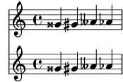

| [ << Fundamental concepts ] | [Top][Contents][Index] | [ Tweaking output >> ] |
| [ < Engravers explained ] | [ Up: Contexts and engravers ] | [ Adding and removing engravers > ] |
4.3.4 Modifying context properties
Contexts are responsible for holding the values of a number of
context properties. Many of them can be changed to
influence the interpretation of the input and so change the
appearance of the output. They are changed by the
\set command. This takes the form
\set ContextName.propertyName = value
where ContextName is usually Score,
Staff, or Voice. It may be omitted,
in which case Voice is assumed.
The names of context properties consist of words joined together with no hyphens or underscores, all except the first having a capital letter. Here are a few examples of some commonly used ones. There are many more.
Property Name Type Function Example Value extraNaturalBoolean If true, set extra natural signs before accidentals ##t,##fcurrentBarNumberinteger Set the current bar number 50doubleSlursBoolean If true, print slurs both above and below notes ##t,##finstrumentNametext Set the name to be placed at the start of the staff \markup { ... }fontSizereal Increase or decrease the font size 2.4stanzatext Set the text to print before the start of a verse "2"
In the above table, a Boolean is either #t (true) or
#f (false), an integer is a whole number (usually
positive), a real is a positive or negative decimal number,
and text is string enclosed in doublequote characters. Note
the use of an additional hash sign (‘#’), which must always
be used if a Scheme expression follows.
Before we can set any of these properties we need to know
in which context they operate. Sometimes this is obvious,
but occasionally it can be tricky. If the wrong context
is specified, no error message is produced, but the expected
action will not take place. For example, the
clefGlyph clearly lives in the Staff context, since
it is the staff’s clef glyph that is to be changed.
In this example the first staff’s clef is printed correctly, but not the
second – which prints the default treble clef instead of the
expected bass (or F) clef – because we omitted the context name.
<< \new Staff \relative { \set Staff.clefGlyph = "clefs.C" c''2 c } \new Staff \relative { \set clefGlyph = "clefs.F" % Wrong! d'2 d } >>![[image of music]](../cf/lily-f75ca8e3.png)
The second \set command effectively sets
Voice.clefGlyph to clefs.F, but as LilyPond
does not rely on clefGlyph in the Voice
context, setting it there has no impact. This is not an
error, and no error message is emitted.
The clefGlyph property will take effect only
if it is set in the Staff context, but
some properties can be set in more than one context.
For example, the property extraNatural is by
default set to #t (true) for all staves.
If it is set to #f (false) in one particular Staff
context, it applies just to the accidentals on that staff.
If it is set to false in the Score context,
it applies to all Staff contexts where it is not
otherwise set.
So this turns off extra naturals in one staff:
<< \new Staff \relative { aeses'2 aes } \new Staff \relative { \set Staff.extraNatural = ##f aeses'2 aes } >>![[image of music]](../f6/lily-024f0c7f.png)
and this turns them off in all staves:
<< \new Staff \relative { aeses'2 aes } \new Staff \relative { \set Score.extraNatural = ##f aeses'2 aes } >>![[image of music]](../60/lily-e6d76050.png)
As another example, if clefTransposition is set in
the Score context, it changes the transposition for
current and future Staff contexts where it is not
otherwise set.
The opposite command, \unset, removes the property from
the context. Often, another \set command can achieve the
same observable result as an \unset. The main
consideration is whether the value from the enclosing context
should show through. \set masks it and \unset
makes it visible.
The \set and \unset commands can appear anywhere
in the input file and will take effect from the time they are
encountered until the end of the score or until the property is
\set or \unset again. Let’s try changing the
font size, which affects the size of the note heads (among
other things) several times. The value is set relative to the
default font size, not to the most recently set value.
\relative { c'4 d % make note heads smaller \set fontSize = -4 e4 f | % make note heads larger \set fontSize = 2.5 g4 a % return to default size \unset fontSize b4 c | }![[image of music]](../cd/lily-6ba6edd1.png)
We have now seen how to set the values of several different types of
properties. Note that Scheme expressions are introduced with a
hash sign, ‘#’, so the ‘true’ and ‘false’ values are specified by
##t and ##f, respectively, with two hash signs. A text property
should be enclosed in double quotation signs, as above, although we
shall see later that text can actually be specified in a much more
general way by using the very powerful \markup command.
Setting context properties with \with
The value of context properties may be set at the time a context
is created. When a context is created with a \new command,
it may be followed immediately by a \with { … }
block in which the initial property values are set. For example,
if we wished to suppress the printing of extra naturals, we would
write
\new Staff \with { extraNatural = ##f }
like this:
<< \new Staff { \relative { gisis'4 gis aeses aes } } \new Staff \with { extraNatural = ##f } { \relative { gisis'4 gis aeses aes } } >>![[image of music]](../d3/lily-346125db.png)
\with can be a clear way to set values that are intended to
remain fixed for the duration of the context; however, it does
nothing to enforce this. Properties initialized this way can
still be changed dynamically using \set and \unset.
Setting context properties with \context
The values of context properties may be set in all contexts
of a particular type, such as all Staff contexts, with a single
command. The context type is identified by using its
type name, like Staff, prefixed by a back-slash: \Staff.
The statement which sets the property value is the same as that in a
\with block, introduced above. It is placed in a
\context block within a \layout block. Each
\context block will affect all contexts of the type specified
throughout the \score or \book block in which the
\layout block appears. Here is an example to show the format:
\score { \new Staff { \relative { cisis''4 e d cis } } \layout { \context { \Staff extraNatural = ##t } } }![[image of music]](../e6/lily-ae4cbe6d.png)
If the property override is to be applied to all staves within the score:
\score { << \new Staff { \relative { gisis'4 gis aeses aes } } \new Staff { \relative { gisis'4 gis aeses aes } } >> \layout { \context { \Score extraNatural = ##f } } }
Context properties set in this way may be overridden for particular
instances of contexts by statements in a \with block, and by
\set commands embedded in music statements.
参见
Notation Reference: Changing context default settings, Set and unset.
Internals Reference: Contexts, Tunable context properties.
| [ << Fundamental concepts ] | [Top][Contents][Index] | [ Tweaking output >> ] |
| [ < Engravers explained ] | [ Up: Contexts and engravers ] | [ Adding and removing engravers > ] |